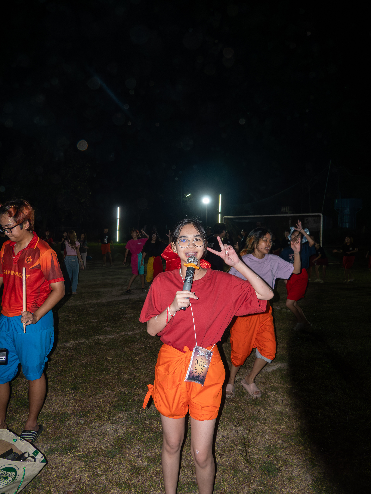
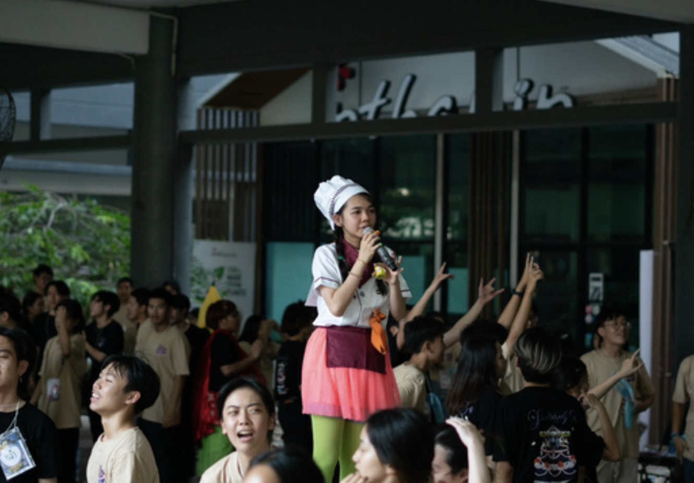

Master of Ceremonies
Recreation Club · Thammasat School of Engineering
Overview
Served as Master of Ceremonies for various events at Thammasat School of Engineering, supporting smooth event execution, audience engagement, and coordination with organizing teams.
Responsibilities
- Served as Master of Ceremonies for various faculty events, supporting smooth event execution and audience engagement.
- Coordinated with organizing teams to understand event schedules, activities, and important announcements.
- Managed transitions between activities and communicated event information clearly to participants.
- Adapted to schedule changes and unexpected situations during live events.
- Supported on-site event operations and worked with organizing teams throughout each event.
Selected Events
Laodinsor Camp 17th & 18th
TSE First Meet 2023 & 2024
TSE First Meet Pattaya 2023 & 2024
ChemE Camp 9th & 10th
3 Sao CSR Camp 9th & 10th
Thammasat Orientation
Photos



